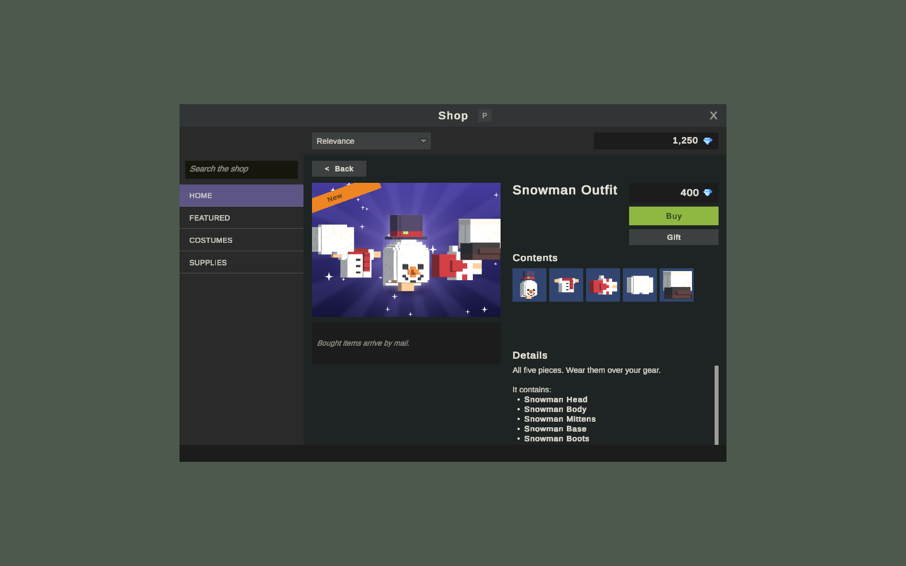
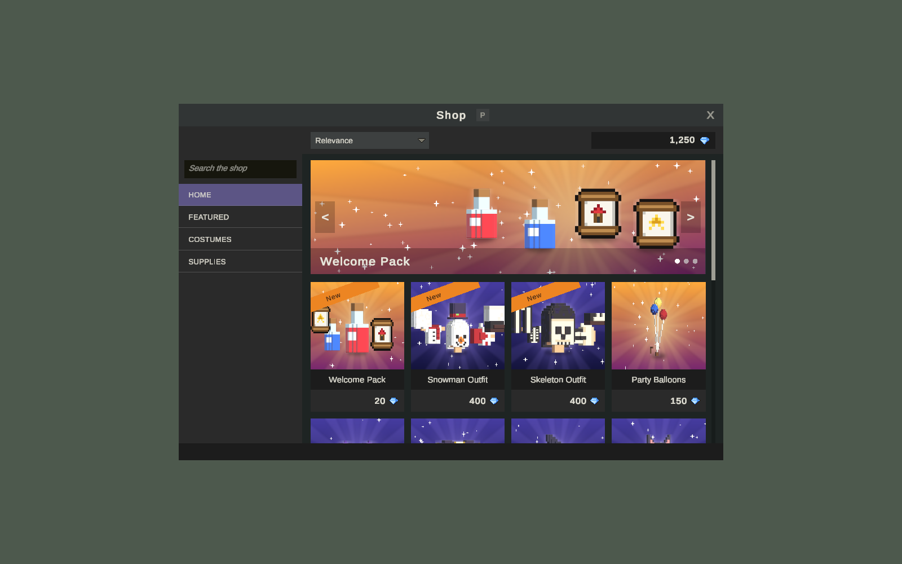

Tienda del juego
La tienda del juego vende ofertas por una moneda premium (las Gems de la muestra) que guarda la cuenta, no el personaje. Los jugadores la abren desde cualquier lugar con P, recorren categorías y un banner, compran para sí mismos o envían regalos. El servicio Shop, un proceso aparte, es dueño del catálogo, los saldos, cada compra y los pagos con dinero real. Esta página cubre lo que ven los jugadores, cómo funciona la compra y qué revisan los servidores, y cómo configurar ofertas con imágenes y banners. Funciona solo en MMO.
Para el jugador


Presiona P o haz clic en el botón de la tienda en la barra de íconos de arriba a la derecha. El botón aparece en juegos en línea, en PC y en pantallas táctiles, mientras el módulo de tienda del juego está activado.
La ventana
- Lado izquierdo: un campo de búsqueda y las categorías. La primera, Home, muestra todas las ofertas con el banner arriba. Cada otra categoría es una entrada, con el nombre de la Category de las ofertas.
- Barra superior: orden (Relevance, Newest, Price: low to high, Price: high to low) y tu saldo con el ícono de la moneda. Un + junto al saldo abre la página web de recarga del juego, cuando el juego tiene una.
- Banner: en Home, las imágenes anchas de las ofertas que tienen una se turnan cada 6 segundos, con flechas y puntos para moverse entre ellas. Hacer clic en él abre la oferta.
- Tarjetas: una por oferta, con su imagen (o el ícono de su objeto), una cinta en la esquina, el nombre y el precio con el ícono de la moneda. Las cintas son la insignia de la oferta (como New o Sale), o Limited time para ofertas con fecha de fin y sin insignia.
Mientras carga, la ventana dice "Loading the shop...". Si el servidor no tiene tienda dice "The shop isn't open on this server."; si el servicio no responde, "The shop can't be reached right now. Try again in a moment."
La página de una oferta
Haz clic en una tarjeta para abrir la página de la oferta: su imagen, el precio, Buy y Gift, lo que contiene como casillas de objeto (pasa el puntero sobre una para ver sus detalles), su descripción y líneas como "It can be bought once per account."
- Buy pregunta "Buy offer for price currency?" y compra al confirmar.
- Gift pide el nombre de un personaje y se la envía. Solo las ofertas marcadas como regalables pueden ser regalos, y no puedes regalarte a ti mismo.
- Una oferta comprada hasta su límite por cuenta muestra Bought.
Adónde van los objetos comprados
Los objetos comprados y los regalos llegan como una carta de la tienda, y el mapa los pasa directo a la bolsa apenas llegan. El jugador lee "subject arrived in your bag.". Si la bolsa y el banco de la cuenta no tienen espacio, la carta espera en el correo y se le avisa al jugador una vez. La opción del juego Shop Auto Take desactiva esto, así que las compras siempre esperan en el correo.
Cómo funciona la compra
- El cliente le pide a su servidor de mapa. El cliente nunca habla con el servicio Shop.
- El mapa revisa la oferta contra su copia del catálogo (a la venta, fechas, límite por cuenta, regalable, no regalarse a uno mismo) y crea las copias de los objetos con sus bonificaciones aleatorias.
- El mapa envía el id de la oferta y las copias al servicio Shop con su clave.
- El servicio Shop cobra su propio precio, nunca uno del mapa, revisa las copias contra la oferta y el catálogo de objetos, y en una sola transacción escribe el débito en el registro de la cuenta y una carta con los objetos. Una compra a la vez.
- El mapa le pide a Central que actualice el buzón del comprador (o del destinatario del regalo) y pasa la carta a la bolsa.
Pagar y recibir los objetos es una sola escritura, así que una falla nunca cobra sin entregar ni entrega sin cobrar. Un jugador espera que termine una compra antes de otra ("Wait for the last purchase to go through.").
Cada compra se escribe en el registro del juego como shop.premium_buy o shop.premium_gift.
Saldos
Cada cambio de un saldo es una fila en currency_ledger (cuenta, moneda, cambio, motivo, una referencia única). El saldo es su suma. La referencia única hace que un pago, una entrega o un webhook repetido cuente una sola vez. Un reembolso puede dejar un saldo bajo cero, y el jugador no puede comprar hasta que vuelva a estar por encima del precio.
Cómo ganar moneda premium
| Fuente | Cómo |
|---|---|
| Jugando | Cualquier recompensa que da una moneda premium (recompensas de misiones, la acción Give Currency) va a la cuenta a través del servicio Shop. En la muestra, la misión Welcome da 20 gemas y la misión del rey 100 |
| GMs | /currency gems 100 Name, que también funciona con personajes desconectados. Consulta Herramientas de GM |
| Dinero real | Webhooks de pago de Stripe o de tu propia tienda web, con los productos listados en el catálogo. Consulta Servicio Shop |
Configuración
1. Una moneda premium
Marca Premium (premium) en una moneda de la Game Database (Currencies). Una moneda premium la guarda la cuenta en un registro que solo escriben los servidores. La muestra tiene Gems. Si tu proyecto no tiene ninguna, la página Shop ofrece una actualización del kit que agrega Gems. Consulta Monedas.
Los prefabs del jugador necesitan el componente PlayerShop. La actualización del kit Shop on the player prefabs lo agrega a proyectos anteriores.
2. Activarla y levantar el servicio
Abre la página Shop de la ventana KitARPG (KitARPG > Shop):
- Activa el interruptor bajo In the game. Activa el módulo de tienda del juego y la tienda en la configuración del lanzador.
- Bajo On this computer, presiona Start the shop. Compila el servicio si hace falta y lo levanta con el lanzador en modo
--shop-only.
El detalle de cada botón está en la página Shop.
3. Ofertas
Cada oferta tiene:
| Campo | Qué hace | Predeterminado |
|---|---|---|
Id (id) |
Nunca cambia una vez que los jugadores la compraron. Hasta 64 caracteres, único | Vacío |
Name (name) |
Se muestra en la tarjeta y la página | Vacío |
Description (description) |
Se muestra en la página | Vacío |
Category (category) |
Una entrada en el lado izquierdo de la tienda por categoría | Featured |
Icon (icon) |
Objeto cuyo ícono muestra la tarjeta cuando no tiene imagen. Vacío: el del primer objeto | Vacío |
Currency (currency) |
El id de la moneda que cuesta | Vacío |
Price (price) |
Mayor que 0 | 0 |
Items (items) |
Ids de objetos y cantidades que da. Al menos uno | Vacío |
Starts At, Ends At (startsAt, endsAt) |
UTC, ISO 8601 (2026-12-01T00:00:00Z). Vacío es siempre |
Vacío |
Per Account (perAccount) |
Veces que una cuenta puede comprarla. 0 es sin límite | 0 |
Giftable (giftable) |
Puede enviarse como regalo | Activado |
Hidden (hidden) |
Se conserva para el historial pero ya no se vende | Desactivado |
Badge (badge) |
Cinta en la tarjeta, como New o Sale. Hasta 24 caracteres | Vacío |
Order (order) |
Menor va primero al ordenar por relevancia | 0 |
Picture (image) |
Clave de la imagen de la tarjeta y la página en el Shop Art del juego | Vacío |
Banner (banner) |
Clave de una imagen ancha; las ofertas que tienen una se turnan en el banner | Vacío |
4. Imágenes y banners
El catálogo es texto en el servicio Shop, así que no puede guardar sprites. Las imágenes viven en el juego, en un asset Shop Art (ShopArt, Create > KitARPG > Shop Art), como una lista de claves y sprites. La oferta nombra la clave.
| Campo | Qué hace | Predeterminado |
|---|---|---|
Shop Art (shopArt), Game Settings > Shop |
El asset Shop Art que usa el juego | Muestra: ShopArt |
Pictures (pictures), en el asset |
Pares de clave y sprite | Vacío |
En la página Shop, elige cualquier sprite para la Picture o el Banner de una oferta: la página lo agrega al Shop Art con el nombre del sprite y escribe ese nombre en la oferta.
La muestra tiene 13 imágenes de tarjeta y 3 banners, dibujados por Art/Tools/make_shop_art.py a partir de los íconos de los objetos.
Las imágenes viajan dentro de la build del juego. Una oferta cuya clave no está en el Shop Art de los jugadores muestra el ícono del objeto en su lugar. Compila y publica el juego antes de publicar ofertas que usen imágenes nuevas.
Paso a paso: una oferta por tiempo limitado con banner
- Dibuja una imagen de tarjeta y un banner ancho e impórtalos como sprites.
- En la página Shop, bajo Offers, agrega una oferta. Dale un id (
winter_cloak), un nombre, una descripción y la categoría Seasonal. - Pon Currency en
gems, un precio, y agrega sus objetos. - Pon Ends At en el último momento en UTC, por ejemplo
2026-12-31T23:59:59Z. Deja Badge vacío para obtener Limited time, o escribe Sale. - Elige el sprite de tarjeta en Picture y el sprite ancho en Banner. Dale Order 0 para que salga primero.
- Presiona Save. Con la tienda corriendo en esta computadora, la oferta está activa al instante: abre la tienda en Play para verla.
- Compila el cliente del juego para que los jugadores tengan las imágenes.
- Para el servidor en vivo, llena Online server (dirección y clave de administración) y presiona Publish to server. Publicar es todo o nada: si alguna oferta tiene un problema, nada cambia y la página lista los problemas.
El servicio recarga solo su archivo de catálogo cuando cambia, así que las ofertas se activan sin recompilar el juego ni reiniciar servidores.
Game Settings
En KitARPG > Game Settings, sección Shop:
| Campo | Qué hace | Predeterminado |
|---|---|---|
Shop Art (shopArt) |
Imágenes para las tarjetas y el banner, encontradas por las claves que nombran las ofertas | Vacío (muestra: ShopArt) |
Shop Top Up Url (shopTopUpUrl) |
Página donde los jugadores compran moneda premium, abierta por el + junto a su saldo. Vacío oculta el botón | Vacío |
Shop Auto Take (shopAutoTake) |
Las compras y los regalos van directo a la bolsa cuando llegan. Desactivado, o con la bolsa llena, esperan en el correo | Activado |
En la ventana misma (CashShopWindow en el prefab del HUD): Toggle Key (P), Home Name ("Home"), Banner Seconds (6), Badge Color y Sale Badge Color (una insignia que contiene Sale Word, "sale", toma el segundo color).
Un jugador y MMO
No hay tienda del juego en un jugador: el botón no aparece y P no hace nada. La moneda premium de las misiones no se guarda en un jugador.
En MMO el servicio Shop tiene que correr junto a Login y Central. Los servidores de mapa lo encuentran con -shop url -shopKey key, o KITARPG_SHOP_URL y KITARPG_SHOP_KEY. En el editor, Play usa la tienda que levantó la página Shop. Consulta Servicio Shop para endpoints, claves, pagos y despliegue.
El módulo de tienda del juego necesita el módulo Mail.
Seguridad
- El cliente solo le pide a su mapa. Las API interna y de administración del servicio Shop quedan fuera de internet; solo los webhooks de pago son públicos.
- El servicio Shop cobra según su propio catálogo y valida cada copia, así que un mapa o cliente modificado no puede cambiar precios ni objetos.
- Corre un servicio Shop por base de datos.
Consulta Seguridad.
Errores comunes
- No hay botón de tienda. El juego es de un jugador, el módulo de tienda del juego está desactivado o el servidor de mapa no tiene un servicio Shop configurado.
- "The shop isn't open on this server." El servidor de mapa arrancó sin
-shopniKITARPG_SHOP_URL. Con Play & Servers, activa la tienda bajo In the game. - Una oferta no aparece. Está oculta, fuera de sus fechas, no tiene objetos o nombra un objeto que la base de datos no tiene. El servicio registra y omite las ofertas inválidas; KitARPG > Project Check marca objetos y monedas que la Game Database no tiene.
- Las tarjetas muestran íconos en vez de imágenes. Las claves de las imágenes no están en el Shop Art del juego, o la build del cliente es más vieja que las imágenes.
- Los objetos comprados no están en la bolsa. La bolsa y el banco estaban llenos. Esperan en el correo.
Páginas relacionadas
- Página Shop
- Servicio Shop
- Monedas
- Correo
- Tiendas de NPC para tiendas que venden por oro